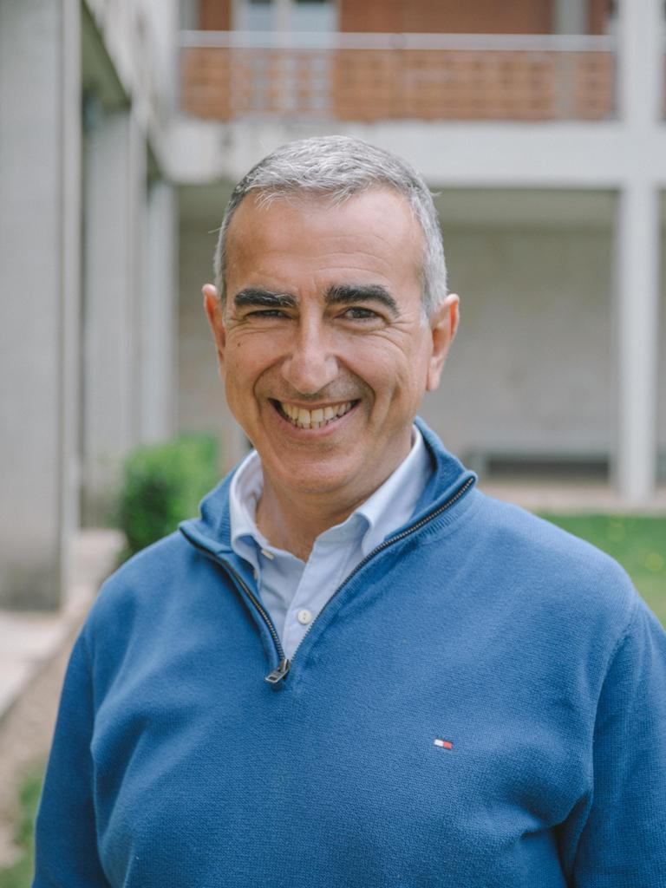
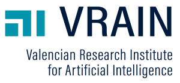

The recent advances in unraveling the secrets of human conditions and diseases have encouraged new
paradigms for their diagnosis and treatment. In addition, the recent pandemics have brought
increasing attention toward the genetic mechanisms of viruses and infected hosts. The information
related to these phenomena is increasing at unprecedented rates, directly impacting the design and
development of data management pipelines and their applications. New ways of processing and exposing
data and knowledge on the Web in healthcare and life sciences environments are thus strongly needed.
The WALS workshop, at its second edition, aims at being a meeting forum for Web Engineering, Data
Management, and Bioinformatics researchers working on life sciences problems, offering the
opportunity to share, discuss and find new approaches to support Search, Knowledge Extraction, and
Data Science on the Web, thereby achieving important results for healthcare, precision medicine,
biology, genomics, and virology.
The workshop welcomes submissions of fresh investigations and demonstrations concerning conceptual,
experimental, and applied studies of life sciences problems on the Web. Directions of particular
interest include: 1) monitoring and adaptation of Web Engineering techniques for life sciences; 2)
design and engineering of Web applications for resolving life sciences problems; 3) development of
crowdsourcing and collaborative strategies for life sciences data curation, integration, and
discovery.
The workshop focuses on Web Engineering as a means for facing the challenges that emerge when designing and developing applications for life sciences, focused on several branches such as healthcare, precision medicine, molecular biology, genomics, and virology. The workshop is not restricted to particular research methods, and we will consider conceptual, empirical, and applied research (including practical demonstrations). The topics of interest include, but are not limited to:
The topics of interest include, but are not limited to:
We invite submissions of high quality papers describing original and unpublished results
regarding any of the workshop’s topics of interest.
Accepted papers will be included in the post-workshop proceedings to appear in Springer's series,
as per the usual tradition of the ICWE conference joint events (see last year's ICWE 2022 Workshops).
The authors must submit manuscripts using the Springer-Verlag LNCS style for Lecture Notes in
Computer Science.
For style files and details, see the page https://www.springer.com/gp/computer-science/lncs/conference-proceedings-guidelines.
The workshop will accept two types of contributions:
Papers must be submitted as PDF files using EasyChair at https://easychair.org/conferences/?conf=wals2023.
To ensure high quality, all papers will be thoroughly peer reviewed by the Program Committee.
Manuscripts not submitted in the LNCS style or having more than 12 pages will be automatically
rejected.
The papers need to be original and not submitted or accepted for publication in any other
workshop, conference, or journal.
For each accepted paper, at least one author must attend the workshop and present the paper.
Registration is subject to the terms and conditions of ICWE.
Main contact: algarsi3@pros.upv.es
Please refer to the main conference website here. At least one of the authors for each accepted paper must have a Regular Registration" and attend the workshop day, for paper presentation.
Anna Bernasconi is a Research Fellow in the Department of Electronics, Information, and Bioengineering also at Politecnico di Milano. Her research focuses on conceptual modeling, data integration, semantic web, and biological data analysis. Since the COVID-19 pandemic, her research has moved to viral genomics, by building models, databases, and Web search systems for viral sequences and their variants. She co-organized and chaired the first three International Workshops on Conceptual Modeling for Life Sciences (CMLS 2020 / 2021 / 2022) co-located with the ER conference and co-organized the First International Workshop on Web Applications for Life Sciences (WALS 2022) co-located with the ICWE conference.
Alberto García S. obtained his Ph.D. cum laude at Universitat Politecnica de Valencia under the supervision of Prof. Oscar Pastor. He is currently a researcher at the VRAIN research institute, where he focuses on conceptual modeling, data science, and User Interface design. He has participated in multiple research projects in collaboration with clinicians and geneticists to generate knowledge from genomics data effectively and efficiently.
Pietro Pinoli works as Research Fellow and lecturer at the Department of Electronics, Information and Bioengineering at the Politecnico di Milano (Italy). He received his PhD cum laude in 2017, with a thesis titled “Modeling and Querying Genomic Data” where he proposed and benchmarked data structures and algorithms to manage, search and elaborate huge collections of genomic datasets, by means of cloud and distributed technologies. He has been visiting PhD candidate at Harvard University (Cambridge, MA, US). His research interests include bioinformatics and computational biology, data bases and data management, big data technology and algorithms, machine learning and natural language processing, and drug repurposing.


09:00-09:30
Welcome and introduction to the workshop
09.30-10:30
Oscar Pastor (Keynote talk):
Data Intensive Domains in Genomic-based Life Science: Web Engineering Implications for
Personalized Health Care
10:30-11:00
BREAK
11:00-11:30
Babak Saremi, Mohan Xu, Chiara Tappermann and Lena Wiese:
Development of an end-to-end web application for visualization, evaluation, and post-processing
of result data from neural network predictions for the melanoma use case.
11:30-12:00
Rafael García Luque, Ernesto Pimentel Sánchez and Antonio Jesús Bandera Rubio:
Digital Avatars: An application to eHealth.
12:00-12:30
Reynaldo Alvarez, Jose Zubcoff and Irene Garrigos:
A DCAT Profile Approach for Citizen Science.